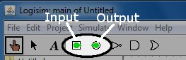
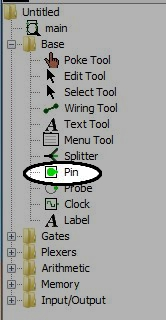
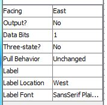
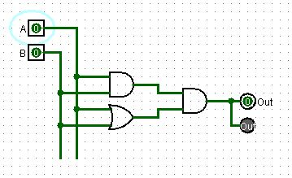
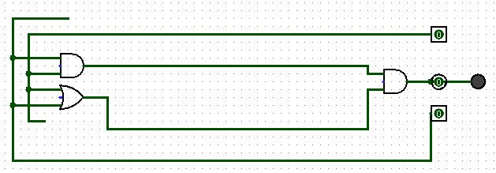

In this class we will be using a few conventions thoughout the entire class. These conventions should be followed on all labs, unless changes are explicitly stated in the lab.
I/O pins:
Input and Output pins are how data and control signals are passed to and from your sub-circuits. There are two places you can create Input and Output pins. The most obvious place is from the main tool bar located at the top of the screen. Figure 1 shows where the Input and Output pin buttons are located.

Fig. 1
The other not so obvious place is from the Base library. Figure 2 shows where I/O pin tool is.

Fig. 2
I would recommend using the buttons located in Figure 1. You may choose which ever method you like, although, if you decide to use Figure 2, then you will need to make sure every time you are adding a pin, you choose whether or not it is an input or output pin.
As with every component in Logisim, there are properties to Input and Output pins. Figure 3 shows the properties associated with an input pin. These properties are the same for an output. The only difference is that the "Output?" field is set to yes.

Fig. 3
As you can see, there are quite a few things you can set on an I/O pin. The following are the main conventions for this class.
These conventions will not change for any lab, unless it is explicitly stated.
Gates and Subcircuits:
Schematic Drawings:
Figure 4 demonstrates the qualities that are necessary in a good schematic drawing.

Fig. 4
As you can see, the drawing has good left to right flow. The inputs are on the left side of the screen and one can easily follow the logic flow to the output on the right side. Also, the circuit is compact, but not crowded.
Figure 5 demonstrates the qualities of a bad schematic drawing.

Fig. 5
As you can see, this drawing is very hard to follow. The two circuits, Fig.4 and Fig.5 have the same logical function, but Fig.4 is much easier to follow what's going on. The first noticeable mistake is that the inputs are on the right hand side of the screen and the circuit is stretched very far apart for a simple circuit. Another mistake is that there are no labels on any of the pins. You can also see a wire going through the output pin to connect a LED to the output. This is not the proper way to make a connection. Finally, you can see there are pins left open on the AND & OR gates. Any gate that is used should have all pins used.
Below is a list of attributes that are necessary for an aesthetically pleasing circuit and must be followed for all circuits drawn in this class, unless explicitly told otherwise in the lab.